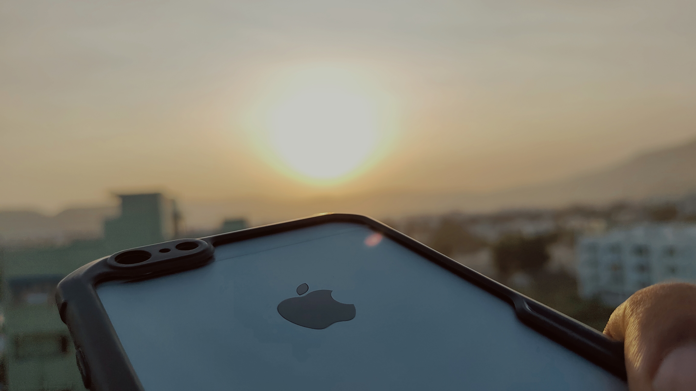
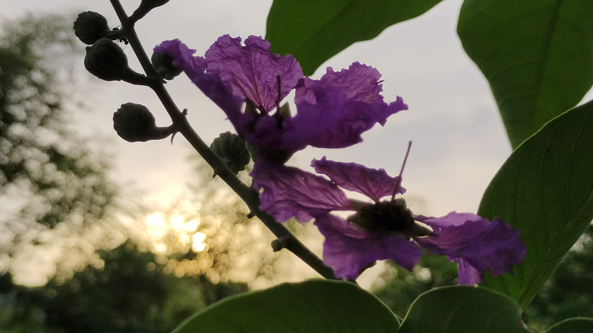
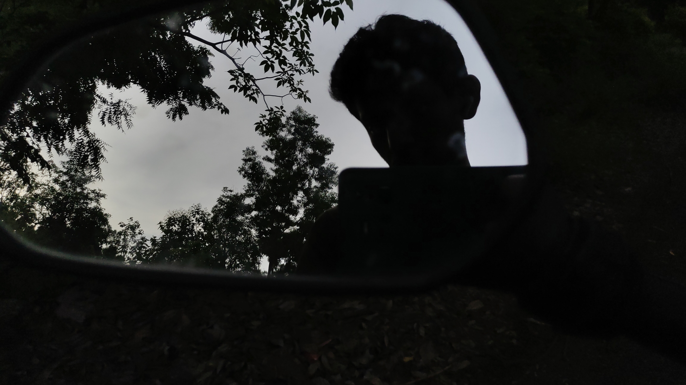
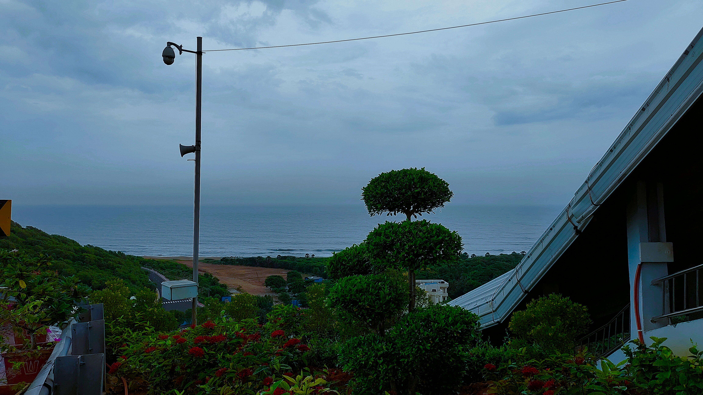
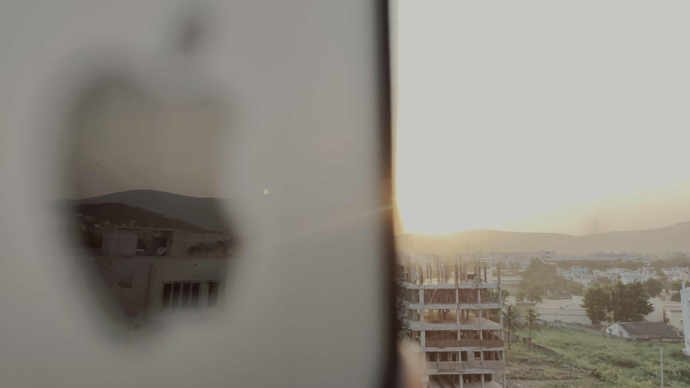
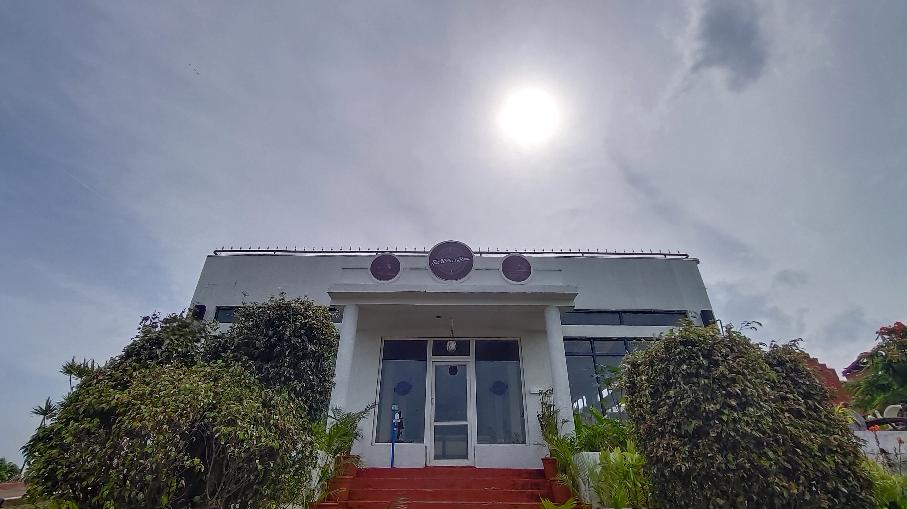

Creative Pursuits
Outside Data Science and AI engineering, I explore UI/UX design, web development, and creative content work such as photo editing and visual storytelling. Here is a short gallery of my photography & design experiments.





